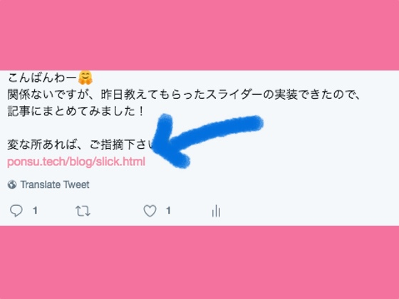

SNSに記事投稿した時、サムネイルを表示させるには？（2019/2/26） SNSでURLを貼り付けて投稿した際に、画像付きリンクを表示させる方法。
自分で書いたブログをTwitterやFaceBookなどのSNSに貼り付けた時に、画像やタイトルのリンクが出てくると嬉しいですよね。いや、むしろ出てきて当たり前。出てこないとちょっと…という時代かもしれません。はてなブログやnoteなどのレンタルブログだと、画像の選択するだけで素敵なサムネイルがでてきます。WordPressならばプラグインで一括して設定できます。 では、自分で作ったブログの場合は？
この記事では、自分でWEB制作している人が簡単にサムネイル設定が出来るように解説をしたいと思います。
↓こんな感じのサムネイルを、タイムラインに表示させちゃいましょう！
ドメインだけ買ってNetlifyという無料のサーバーを使って運用している当ブログですが、 記事を知り合いに見てもらおうと、Twitterにリンクを貼って送信したときに違和感を感じました。

わかります？
そうです！URL だけで味気ないのです！
確かに昔はみんなこんな感じだった気もしますが、
なんかナウくないですよね！ハイカラじゃないですよね！
今時のブログは投稿すると、小さい画像とタイトルつきでこんな感じの出てきますもんね！
もしくは、こんなの...
という訳で、SNSに投稿した時に画像付きリンクを表示させる方法を調べてみました。
1、画像の準備をします。
サムネイルには２種類あります。 上に大きな画像がついて、下に簡単な説明がつくタイプの大きなサムネイルと、 小さな画像が左側についている長方形型のサムネイルです。
大きな画像のサムネイルを作りたい場合は、800×419ピクセルの画像を用意しましょう。
小さな画像のサムネイルを作りたい場合は、300×300ピクセルの画像を用意しましょう。
2、<head>の中に以下のように書き込みます。
<meta content="article" property="og:type">
<meta property="fb:admins" content="FaceBookのID" />
<meta name="twitter:card" content="大きい画像か？小さい画像か？" />
<meta name="twitter:site" content="@TwitterのID" />
<meta property="og:url" content="SNSに投稿する記事のURL" />
<meta property="og:title" content="記事のタイトル" />
<meta property="og:description" content="記事の説明" />
<meta property="og:image" content="表示したい画像のURL" />
まず、一番上の<meta content="article" property="og:type">ですが、 これは、「このページは記事ですよー」と宣言している部分です。 ブログ記事を貼り付けたい限り、ここは常に固定です。
次に、<meta property="fb:admins" content="FaceBookのID" />ですが、ここにはあなたのFaceBookのIDを入れていきます。FaceBookのIDは基本15桁の数字です。 もし自分のFacebook IDがわからなければ、 https://findmyfbid.com/ にアクセスして、あなたのページのURLを入力すれば教えてくれます。
<meta name="twitter:card" content="大きい画像か？小さい画像か？" /> は、どちらの種類のサムネイルを作るかで入力内容が異なります。 大きな画像のサムネイルを作りたいならば、「summary_large_image」と入力しましょう。 小さな画像のサムネイルを作りたいならば、「summary」と入力しましょう。
<meta name="twitter:site" content="@TwitterのID" />は、あなたのTwitterのIDを入れるところです。 私であれば、<meta name="twitter:site" content="@Hellomy432" /> ですね。Twitterの自分の名前の下に表示されていると思います。
<meta property="og:url" content="SNSに投稿する記事のURL" />は、 サムネイルとリンクしている記事のURLです。 この記事のサムネイル画像設定ならば、 <meta property="og:url" content="https://ponsu.tech/blog/thumbnail.html" /> となります。
最後に、<meta property="og:image" content="表示したい画像のURL" />ですが、 これは例えばこのブログページであれば、 <meta property="og:image" content="https://ponsu.tech/img/SNSslick.jpg" /> となります。いつものHTMLでの画像呼び出しの感覚だと../img/SNSslick.jpgなどと書きたくなりますが、それとは少し違うので注意してください。
これで完成です！
しばらくすると、サムネイルが反映されるようになりますが、ただ待っていると少し時間がかかります。 そこで、https://cards-dev.twitter.com/validator にアクセスして、サムネイルをつけたい記事のURLを打ち込むと早く反映されるので、ぜひやってみて確認しましょう。